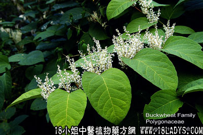

大叶蛇总管（蓼科）
古籍名：虎杖《本草集注》。
植物名：虎杖。
生长环境：本品为多年生，灌木状，直立草本。生于山坡、路旁溪边、林荫地方。
分布：我国长江以南各省，广东连平、英德、高要等县均产之。
入药部分：根。
采集期：全年。
自采地点：山岗湿地。
性味：性凉、味苦。
功能：清热、解毒。
主治、用量和用法：1、热毒疮：干用为末，蜜糖调敷患处；2、蛇伤：干用5钱至1两，清水煎服；3、皮肤生蛇：干用5钱至1两，清水煎服，并将渣煎水外洗。
验方（治蛇伤方）：大叶蛇总管5钱、七星剑3钱、鲗鱼胆草5钱、金锁匙3钱、半边莲3钱、一炷香3钱、蛇王草3钱、清水三碗，煎成一碗服。
（方解）方中蛇总管、鲗鱼胆草清凉解毒；金锁匙、七星剑、半边莲、一炷香、蛇王草均为祛风消肿，解毒止痛之药。合为治蛇咬伤内服之方。
（方歌）毒蛇咬伤蛇总管，鲗鱼胆草蛇王草，金锁七星半边莲，一炷香烧煎服好。
参考资料：《临床实用中药》功效：1、治毒蛇咬伤，清凉解毒，内外兼用；2、治蛇疮、脓泡疮，内外用；3、止损上痛；4、种此药可辟蛇。
又：民间用其根以制烟管，可防牙痛。